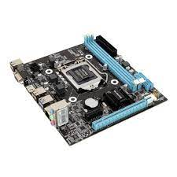
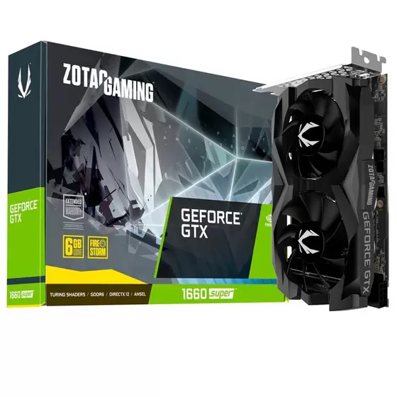

Placa-Mãe:
A placa mãe é a parte mais importante na hora de montar um computador, já que sem ela nada funciona. Por ser a responsável de abriga-los em seu corpo, a placa mãe precisa ser forte o suficiente para “aguentar e orientar” as demais peças. Além de permitir a expansão de alguns componentes, esse modelo irá atender as necessidades de estudantes ou pessoas que não buscam um computador top de linha, porém que supra a necessidade de lazer e estudos, pesquisas, etc. A que melhor se encaixa nesse perfil é a: Placa Mãe Bluecase Bmbh81-A3hgublk Lga 1150 2 Slots Ddr3.
Os valores desse produto variam de:
Processador:
O item é mais um dos elementos essenciais em um computador. Ele permite que o computador trabalhe de maneira mais rápida, sem travamentos. Ao processar e levar as informações mais rápidas de um lado para o outro, ele permite um melhor desempenho e exigindo menos de outras peças do computador.
Para aqueles que buscam um computador que auxilie em pesquisas, estudos, jogos leves, assistir vídeos e série, recomendamos o Processador Intel Celeron G5905 Dual Core 3.50GHz, 10ª Geração LGA1200, 4MB Cache. Existem outros no mercado, mas esse já irá atender essas necessidades.
Os valores desse produto variam de:
Memória RAM:
A memória RAM vai ser responsável por fazer as informações “girarem” enquanto se utiliza o computador. Também, normalmente, é ela a responsável quando o computador começa a travar. Significa que ela está sendo muito exigida, tanto para manter muitas informações enquanto há uso no computador, quanto para conseguir transportar as informações de maneira mais rápida.
Por isso recomendamos uma memória Kingston 4GB 1600Mhz DDR3 CL11 - KVR16N11S8/4. Ela atenderá a necessidade de navegar com algumas abas do navegador abertas, assim como usar mais de um aplicativo ao mesmo tempo.
Os valores desse produto variam de:
Memória:
Não podemos esquecer que a memória, apesar de não ser um requisito para que um computador ligue, é muito importante. Se tornando uma peça quase essencial, quando falamos em computador. Ainda para quem busca um computador com foco em pesquisas, estudos e navegar por vídeos, recomendamos a memória Hd Ssd Micro Sata 128gb Disco Sólido Kingfast.
Os valores desse produto variam de:
Fonte:
A fonte possui importante papel dentro do computador, sendo o seu principal a distribuição de energia para cada peça e componente no computador, possibilitando o funcionamento do aparelho. Quanto maior a sua potência, melhor será o funcionamento da máquina.
Às vezes, dependendo da fonte, pode acabar comprando um componente não muito silencioso e potente, por isso recomendamos a: Fonte K-mex Pb-200cnf Mini Itx 200w Micro Atx.
Os valores desse produto variam de:
Gabinete:
O Gabinete é uma das peças-chaves do computador, já que é ele que abriga todos os outros componentes que estarão presentes na máquina. Serve também para manter as peças protegidas de poeira, líquidos etc.
Existem diversos modelos presentes no mercado. Para alguém que busca algo mais simples fica a dica do Gabinete Micro ATX PCYES OP-2 32073 Office Escritório Preto.
Os valores desse produto variam de:
Fan Cooler:
A principal função do Cooler é manter a refrigeração da máquina. Assim, não deixando que o computador superaqueça e comprometa o funcionamento de cada peça ou execução da máquina. Ele é a junção da ventoinha com o cooler, que é o dissipador. Recomendamos o: Cooler FAN PCYES para Gabinete, Sangue Frio 2.
Os valores desse produto variam de:
Placa-Mãe:

Como vimos, a placa-mãe é uma das, se não a mais, peças mais importantes de um computador. Caso esteja procurando algo mais específico e para trabalhar, seja com planilhas, edição etc.
Recomendamos: Placa Mãe Asus Prime H510M-E, Intel LGA 1200, microATX, DDR4. Esse modelo será ideal para escritório e até jogos leves.
Os valores desse produto variam de:
Processador:
Para aqueles que buscam um computador para jogos leves, criação e modificação de planilhas, trabalho de escritório, recomendamos Processador Intel Core I5 4590 3.70ghz 1150.
Por ser um processador normalmente utilizado em computador gamer, irá rodar bem e sem muito travamento arquivos mais pesados. Assim como deve durar um tempo no mercado.
Os valores desse produto variam de:
Gabinete:
O Gabinete é uma das peças-chaves do computador, já que é ele que abriga todos os outros componentes que estarão presentes na máquina. Serve também para manter as peças protegidas de poeira, líquidos etc.
Existem diversos modelos presentes no mercado. Para alguém que busca algo mais simples fica a dica do Gabinete Micro ATX PCYES OP-2 32073 Office Escritório Preto.
Os valores desse produto variam de:
Fan Cooler:
A principal função do Cooler é manter a refrigeração da máquina. Assim, não deixando que o computador superaqueça e comprometa o funcionamento de cada peça ou execução da máquina. Ele é a junção da ventoinha com o cooler, que é o dissipador. Recomendamos o: Cooler FAN PCYES para Gabinete, Sangue Frio 2.
Os valores desse produto variam de:
Memória RAM e SSD:
Os valores desse produto variam de:
Para quem quer e procura um computador melhor, que irá conseguir rodar bem o sistema operacional, navegar com várias abas abertas, jogar jogos leves, fazer muitos downloads, fica ligado na memória RAM e SSD que irão implementar no computador.
Pensando nisso recomendamos as memórias Memória Kingston Fury Beast 8GB 3200MHz DDR4 RGB CL16 - KF432C16BBA/8 (memória RAM) e a memória SSD M.2 2280 Samsung 970 EVO Plus 500GB.
Os valores desse produto variam de:
Fonte:
E claro, não podemos esquecer a fonte para poder ligar e fazer todo esse aparato funcionar!
Como esse é um computador com mais potência, logicamente ele exige mais energia e desempenho, por isso nossa dica fica com a Fonte Atx 500w Real Brazilpc Bpc/5330-b 24 Pinos.
Os valores desse produto variam de:
Placa-mãe:
Para um computador gamer (voltado para jogos), é ideal que tenha uma ótima placa-mãe, bem espaçosa etc. Para ter um bom computador dessa categoria, recomendamos a placa: Placa Mãe Asus Prime H610M-A D4, LGA 1700 H610, mATX, DDR4.
Essa é bem espaçosa (largura), suporta processadores de 12ª geração, possui ferramentas flexíveis para melhor ajuste de todo o sistema.
Os valores desse produto variam de:
Processador:
Em um computador gamer, é ideal que se tenha um ÓTIMO processador, já que é ele que vai permitir que os programas e jogos rodem com maior facilidade na máquina.
Não tenha pena de gastar aqui, é um dos pontos chaves para o funcionamento. Pensando nisso, escolhemos o processador: Processador Intel Core I7-10700F, 10ª Geração, 2.9GHz (4.8GHz Turbo), LGA1200, 16MB - BX8070110700F.
Os valores desse produto variam de:
R$1.968,90 R$2.049,97 R$1.790,95.
Placa de Vídeo:
Por ser um computador mais pesado e precisar de componentes melhores e mais atuais para rodar jogos pesados com uma maior facilidade, não poderíamos deixar de fora uma boa placa de vídeo. O que irá permitir gráficos bem melhores e ótimas resoluções de tela; a escolhida foi a Placa de Vídeo GTX 1660 Super Twin Fan Zotac Gaming NVIDIA GeForce, 6 GB GDDR6 - ZT-T16620F-10L
Os valores desse produto variam de:
Memórias RAM e SSD:
Os valores desse produto variam de:
Ambas as memórias em computadores desse porte também são muito importantes. Quanto maior melhor! Elas, juntas com outras peças, irão permitir uma jogabilidade maior ao usuário, assim como ter arquivos e jogos mais pesados armazenados nelas.
Por isso, uma boa escolha de memórias é muito importante: SSD 1TB Husky Gaming - Leitura: 500mb/s - Gravação 500mb/s (memória SSD) e a memória RAM Gamer Husky Gaming Avalanche, 16GB, 3200MHz, DDR4, CL19, Preto - HGMF008
Os valores desse produto variam de:
Fonte:
É claro que para ligar/fornecer energia para todo esse aparato será necessária uma boa fonte de energia. Se liga na dica: Fonte One Power, 600W, Bivolt - MP600W3-I.
Os valores desse produto variam de:
Fan Cooler:

E para tirar onda com o pessoal, estilosos fans coolers para fazer todo o resfriamento da máquina. Cooler Fan Rise Mode Energy, 3 Unidades, 120mm, ARGB, Preto - FN-02-RGB-5V.
Os valores desse produto variam de:
Gabinete:
E por último, mas não menos importante, o gabinete!
Para segurar e aguentar todas essas peças, pensamos em algo funcional, espaçoso e bonito. O escolhido foi o Gabinete Gamer Rise Mode Glass 06X, Mid Tower, Lateral em Vidro Fumê e Frontal em Vidro Temperado, Preto - RM-CA-06X-FB. É um pouco mais caro, mas vai atender muito bem cada peça.
Fora que dá até para tirar uma onda com os amigos, pois é bonito!
Os valores desse produto variam de: